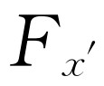
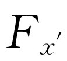
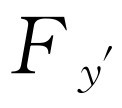
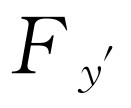
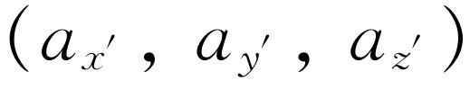
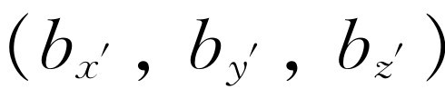
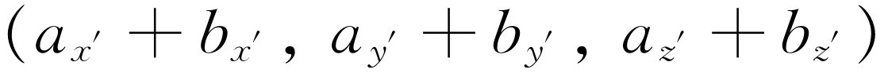
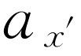
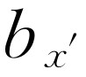
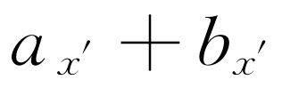

第11章 矢量
§11-1 物理学中的对称性
我们在本章中介绍的课题，在物理术语上称为物理定律的对称性 。这里所用的“对称性”一词具有特殊涵义，因此需要加以定义。事物在什么时候是对称的——我们究竟怎样定义它呢？当我们拿到一幅对称的图画时，它的一边和另一边总是相同的。外尔（H.Weyl）教授曾给对称性下了这样一个定义：如果能对一个事物施加某种操作，在此操作以后能使它与原来的情况完全相同，则这个事物是对称的。例如，如果我们观察一个左右对称的瓶子，那么当把它绕竖直轴转过180°后，看上去它就和原来的完全一样。关于对称性的定义，我们将采用外尔的这种较为直观的形式，并以此来讨论物理定律的对称性。
假定我们在某个地方建造了一台复杂的机器，它具有很多复杂的相互作用，并且有很多小球由于它们之间力的作用而跳来跳去，等等。现在，假如我们在另一个地方建造一个完全相同的装置，它的各个部分都与前者相同，都具有同样大小和方位，那么除了横移一段距离外，两台机器一切都相同。如果我们在相同的初始情况下，完全一致地开动这两台机器，我们要问：这两台机器的行为是否完全一样？它们所有的动作是否完全对应？当然，答案很可能是否定 的，因为假如我们选错了地方，把一台机器安装在某个墙壁里面，则由于受墙的影响，这台机器运转不起来。
在使用物理学中的所有概念时，都需要具备一定的常识，它们不纯粹是数学的或抽象的概念。我们应该了解，当我们说：把一个装置移动到一个新的位置时现象完全相同这句话是什么意思。我们的意思是说，我们把一切我们认为有关的东西都移过去了，如果现象不相同，我们就认为还有某些有关的东西没有移过去，于是就要把它找出来。如果一直找不到，我们就宣称这些物理定律没有这种对称性。另一方面，如果这些物理定律具有这种对称性，我们就能找出我们预计应该能找到的那些东西。例如在上一个例子中，环顾一下周围，就会发现原来墙壁正在影响着我们的装置。根本问题在于，如果我们能足够明确地定义事物，如果能把所有必不可少的力都包括在装置里面，并且把所有有关的部分从一个地方移到另一个地方，那么这些规律是否就相同呢？这台机器装置是否就以相同的方式运转呢？
很清楚，我们要做的是移动整个装置和所有的主要 影响，而不是世界上的一切东西 ——行星、恒星等，因为如果我们这样做，我们就又会得到相同的现象，道理很简单：因为我们正好又回到了开始时的状况。不，我们不可能移动一切东西 。但是实践表明，只要我们对需要移动的东西有一定的理解力，机械是能够运转的。换句话说，假如我们不把机器放到墙里，以及我们知道所有外力的来源，并设法把它们移走，那么机械在一个地方就会像在另一个地方一样工作。
§11-2 平移
我们将只限于分析力学问题，因为对力学我们已经掌握了足够的知识。在前几章中，我们已经看到对于每一个粒子，力学定律都能归纳成三个方程
这意味着我们有办法测量三个互相垂直的轴x 、y 和z 以及沿这些方向的力，以使得这些定律成立。这些量必须从某个原点量起，但是原点放在什么地方呢 ？牛顿最初告诉我们，存在着某个我们赖以从它量起的地方，它可能就是宇宙中心，可使这些定律成立。但是，我们可以立即证明永远找不到这个中心，因为如果采用其他原点，得出的结果不会有任何差别。换句话说，假设有两个人——乔（Joe），他以某处为原点，和莫（Moe），他有一个与乔平行的坐标系，但原点在另外一个地方（图11.1）。现在当乔测量空间中某点的位置时，他发现这一点在x 、y 和z 处（通常我们不画出z 轴，因为在一个图上画那么多轴显得太乱）。另一方面，当莫测量同一点时，他得出一个不同的x 值（为了区别起见，我们令它为x ′），而且在原则上y 值也不同，虽然在这个例子中，两个y 在数值上相等。因此，有
x ′=x -a ，y ′=y ，z ′=z .（11.2）
现在，为了完成我们的分析，还必须知道莫会得到怎样的力。假设力沿着某一条线作用，在x 方向上的力就是总的力在x 方向上的分量，即力的大小乘以它和x 轴之间夹角的余弦。这里，我们看到莫和乔采用完全相同的投影，因此得出方程组
这些就是乔和莫看到的各个量之间的关系。
问题在于，如果乔知道牛顿定律，而莫也试图写出牛顿定律，那么牛顿定律对莫是否还正确？从不同原点来测量这些点是否会有什么差别？换句话说，假如方程组（11.1）正确，并且方程组（11.2）和（11.3）给出了各个量之间的关系，下面的方程式
是否也正确呢？
为了检验这些方程式，我们将对x ′的式子微分两次。首先
这里，我们假定莫的原点相对于乔是固定（不动）的，因此，a 是一个常数，da /dt =0，这样就得到
因而
因此方程式（11.4a）就变成
（我们还假定乔和莫测得的质量是相等的）。因此，加速度和质量的乘积与另一个人的一样，我们已经得出了
的公式，把式（11.1）代入 的式子，就得到
的式子，就得到
因此，莫看到的规律是一样的，他用不同的坐标也能写出牛顿定律，而且将仍然正确。这就意味着没有唯一的方法定义世界的原点，因为不管从哪个位置进行观察，这些定律都是一样的。
下面的这个论断也是正确的：如果在某处有一个内部具有某种机械的装置，则在另一处的同一装置将以同样的方式运转。为什么？因为莫研究的机械和乔研究的另一个机械满足完全相同的方程式。既然，方程 是相同的，那么出现的现象 也相同。因此，证明一个装置在一个新的位置上的行为与在老的位置上的行为完全一样，与证明当它们在空间发生位移时，方程式的形式不变，这两者是一回事。因此，我们说，物理定律对于平移是对称的 ，这里对称的意义是指当我们把坐标作一平移时，物理定律不变。当然，从直观上看，它的正确性是显而易见的，但是讨论它的数学关系却是很有趣而又引人入胜的。
§11-3 转动
上面是关于物理定律对称性的一系列较为复杂的命题中的第一个。下一个命题是无论把轴选择在哪一个方向应该没有影响。换句话说，假如我们在某处建造了一个装置，并观察它的运转，同时在附近我们再造一个同样的装置，但使它转过一个角度，它是否将以同样的方式运转呢？显然不是，有摆的老式的大座钟就是一个例子。例如一个摆钟竖直地放着，它走得很好，但是如果把它斜放，摆碰到钟罩的一个面上，因而它就不走了。因此，就摆钟来说，除非把吸引摆的地球也包括进去，否则，上述定理就不成立。因此，如果我们相信对转动而言物理定律是对称的，那么对于摆钟我们就能作如下预言：除了钟的机械结构之外，在摆的运转中还包含有其他因素，因此必须找出钟之外的因素。我们也可以预言，如果把摆钟放在相对于产生这种不对称的神秘起源（或许是地球）来说不同的位置上，摆钟的走动情况将不同。事实上，例如，我们知道在人造卫星上的摆钟根本不走，因为那里没有有效作用力，而在火星上摆钟将以不同的速率走动。摆钟除了内部的机械结构外，的确 包含有其他东西，也就是含有某些外来的因素。当我们认识到这个因素时，我们知道应该使地球随这个装置一起转动。当然，我们无须为此担心，这是很容易做到的；只要等一会儿，地球就转过一些，于是摆钟在新的位置上就像以前一样走动着。当我们在空间转动时，我们的角度不断在变化，而且是绝对地在变化，这种变化似乎没有给我们带来很大麻烦，因为我们在新的位置上的情形就像在原来的位置上的一样。这里可能会使人迷惑不解，因为在新转过的位置上物理定律与在未转动的位置上完全一样，这是正确的。但是，如果认为一个正在转动 的物体和一个不在转动的物体遵循同样的规律，这就不 对了。假如我们进行足够精密的实验，就能断定地球正在转动 ，但不能说出地球已经转过多少。换句话说，我们不能确定地球所处的角度的位置，但能断定它正在发生变化。
现在我们来讨论角方位对于物理定律的影响。让我们来看一看乔和莫的游戏是否还能重演。这一次，为了避免不必要的麻烦，我们假定乔和莫采用同一个坐标原点（我们已经证明过，坐标轴能够平移到另一个地方）。假定莫的轴相对于乔的轴转过一个角度θ 。这两个坐标系如图11-2所示。该图只限于两维的情况。考虑任意一点P ，在乔系统中其坐标为（x ，y ），在莫系统中为（x ′，y ′）。和前面一样，我们将从用x 、y 和θ 来表示坐标x ′和y ′开始。为此，首先从P 点向四个轴各画一条垂线，并画出AB 垂直于PQ 。从图上可以看出x ′可以写成沿x ′轴的两段长度之和，y ′可写成沿着AB 的两段长度之差。所有这些长度都能用（11.5）式中的x 、y 和θ 来表示，其中我们还增加了一个第三维的方程式
图11-2 角方位不同的两个坐标系
下一步是按照上述的一般方法来分析两个观察者所看到的那些力之间的关系。假设有一个力F ，已经被分解成分量F x 和F y （从乔看来）作用在图11-2中P 点处的一个质量为m 的质点上。为了简化起见，我们把两组坐标轴的原点都移到P 点，如图11-3所示。莫沿着他的坐标轴看到的F 的分量是 和 。F x 在沿x ′和y ′轴的方向上都有分量，同样F y 在这两个轴的方向上也有分量。为了用F x 和F y 来表示 ，我们把它们沿x ′轴的分量加起来，以同样的办法用F x 和F y 来表示 。结果是
图11-3 在两个坐标系中力的分量
有趣的是这里看到了一种出人意外的，然而是非常重要的情况：分别表示P 点坐标的式（11.5）和力F 的分量的式（11.6）具有相同的形式 。
和前面一样，假定牛顿定律在乔的坐标中成立，而且可用式（11.1）来表示。问题仍然是莫是否能应用牛顿定律——对于他的坐标轴转过的系统这些结果是否仍然正确？换句话说，如果我们假设式（11.5）和（11.6）给出了各个测量值之间的关系，那么下式
是否也正确呢？为了检验这些方程，我们分别计算式子的左端和右端，然后比较其结果。为了计算左端，用m 乘以式（11.5），并求出它对时间的两次微商，这里假定角度θ 为常数。这就给出
然后再计算式（11.7）的右边。把式（11.1）代入式（11.6），这就得出
看哪！式（11.8）和（11.9）右端是一样的；因此，我们断定，如果牛顿定律对一组坐标轴是正确的，它们对其他任何一组坐标轴也是正确的。从刚才对坐标轴的平移和转动证实的结果得出一些推论：第一，没有一个人能宣称他的特定坐标轴是唯一的，虽然对于某些特定的问题，这些坐标轴可以带来方便 。例如，把重力的方向作为某一个轴的方向是比较方便的，但是这在物理上并不是必须的。第二，它意味着如果整套设备完全装在一起，即所有产生力的装置都包含在这套设备的内部，当把它转过一个角度时，它的运转情况不变。
§11-4 矢量
不仅牛顿定律，而且我们迄今为止所知道的其他物理定律，都具有这两种特性，我们称之为在轴作平移和转动情况下的不变性（或对称性）。这些特性极为重要，因而发展了一种数学技巧，用来写出和应用物理定律。
前面的分析包含有相当乏味的数学工作。为了在分析这些问题时把那些繁琐的东西减小到最低限度，设计了一种非常有用的数学工具，称为矢量分析 ，也就是本章的标题。但是，严格地说，本章讲的是物理规律的对称性。为了得出我们希望得到的结果，采用前面分析的方法，我们已经能够做需要做的一切事情，但实际上，我们总喜欢做起事来更方便和更快一些，因此采用了矢量技术。
我们先注意一下在物理学上很重要的两类量的某些特性（实际上不仅仅是两类，我们就从这两类研究起）。其中之一我们称为普通量，例如一个袋子里土豆的数目，是一个无方向的量，或称为标量，温度就是这种量的另一个例子。在物理学中占有重要地位的另外一些量是有方向的，如速度：我们不仅要知道它的速率，还要记录它向哪个方向运动。动量和力也有方向，位移也一样：当某人从一个地方走到另一个地方时，我们可以记录他走了多远，但假如我们还想知道他到哪里 去，就还需要说明方向。
所有有方向的量都称矢量 。
一个矢量由三个数组成。要表示在空间中所走的一步，比如说，从原点走到坐标为（x ，y ，z ）的特定点P ，我们确实需要三个数，但是，我们另外创造一个数学符号 r ，它与我们至今采用的数学符号都不同 [1] 。它不 是一个单一的数，而是代表三个 数：x 、y 和z 。一个矢量意味着三个数，但实际上又并不仅仅是那 三个数，因为如果我们采用不同的坐标系，这三个数就要变成x ′、y ′和z ′。但是，为了保持数学的简单性，我们想用同一个符号 来表示三个数（x ，y ，z ）和另外三个数（x ′，y ′，z ′）。也就是说，我们采用同一符号来表示相对于一个坐标系的第一组三个数，但如果我们用另一坐标系时，它就表示另一组三个数。这样做大有好处，因为当我们改变坐标系时，我们无须改变方程的字母。假如我们用x ，y ，z 写出一个方程式，当采用另一坐标系时，就要换成x ′，y ′，z ′。但是，按照习惯假如采用一组坐标轴时，r 表示（x ，y ，z ），当采用另一组坐标轴时，它表示（x ′，y ′，z ′），等等，我们将只写 r 就行了。在一个给定坐标系中，描述一个矢量的三个数称为矢量在该系统三个坐标轴方向上的分量 。也就是说，我们用同一个符号来表示相应于从不同的坐标轴看到的同一客体 的三个字母。正因为包含着在空间中走一步这件事与我们测量它时所用的分量无关这种物理直觉，我们才能说“同一个客体”这一事实。因此，不管我们怎样转动坐标轴，符号 r 都表示同一事物。
现在假定还有另一个有方向的物理量，它是有三个数与之相联系的一个任意量，例如力，在我们改变坐标轴时，这三个数通过一定的数学法则变成了另外三个数。它应该与把（x ，y ，z ）变成（x ′，y ′，z ′）的法则一样。换句话说，任何与三个数相联系的物理量，当它的变换和在空间中走一步的三个分量的变换一样时，就是一个矢量。如
F = r
的式子，在某一个坐标系中是正确的，那么在任何 坐标系中它也应是正确的。当然，这个方程式代表三个方程式
F x =x ，F y =y ，F z =z .
或者，也代表
一个物理关系可以表示成矢量方程这一事实使我们确信：这种物理关系在坐标系仅仅作转动时是不变的。这就是为什么矢量在物理学中如此有用的道理。
现在我们来研究矢量的某些性质。速度、动量、力和加速度都是矢量的例子。根据多种用途，用一个指示矢量所作用的方向的箭头来表示矢量是很方便的。为什么能用箭头来表示力呢？因为它具有和“在空间走一步”相同的数学变换性质。因此，就像走一步中的“步”一样，我们可以用一个力的单位，比如令一牛顿相应于某个规定的长度作为尺度，把它在图上表示出来。一旦这样做了，则所有的力都能用长度来表示。因为类似于
F =k r
的式子，这里k 是常数，是一个完全合理的式子。因此，我们总是可以用线来表示力，这是非常方便的，因为只要画出线，就不再需要轴了。当然，当轴转动时，它的三个分量会改变，我们能很快地算出这些分量，因为这仅仅是一个几何问题。
§11-5 矢量代数
我们现在来叙述矢量用不同方式组合时的定律或法则。第一种组合是两个矢量相加 ：假设 a 是一个矢量，在某一特定坐标系中它具有三个分量（a x ，a y ，a z ）， b 是另一个矢量，它也有三个分量（b x ，b y ，b z ）。现在让我们创造三个新的数（a x +b x ，a y +b y ，a z +b z ）。这些数是否构成一个矢量呢？“是的”，人们可能会说，“它们是三个数，每三个数都构成一个矢量。”不对，不是 每三个数都能构成矢量！要使它是一个矢量，不仅要有三个数，而且这三个数必须要以这样的方式和一个坐标系相联系，即当转动坐标系时，这三个数正好按照我们已经叙述过的严格的规律相互“旋转”，彼此“混合在一起”。因此，问题在于，如果我们转动坐标系，使（a x ，a y ，a z ）变成 和（b x ，b y ，b z ）变成 ，那么（a x +b x ，a y +b y ，a z +b z ）变成什么呢？它们是否变成 ？回答当然是“对的”，因为方程式（11.5）的标准变换是所谓线性 变换。如果把这些变换应用于a x 和b x 以得出 和 ，就会发现已变换的a x +b x 的确是 。当 a 和 b 在这个意义上“彼此相加”时，它们将构成一个矢量，我们称之为 c 。我们可以把它写成
c = a + b .
从它的分量我们立即看出 c 具有重要的性质
c = b + a ，
这样还有
a +（ b + c ）=（ a + b ）+ c .
我们可以按任意次序把矢量相加。
a + b 的几何意义是什么呢？假如在一张纸上用线段来表示 a 和 b ，那么 c 应是什么样子呢？如图11-4所示，我们看到，如果把表示 b 分量的矩形以图中所示的方式放到表示 a 分量的矩形上，就能非常方便地把 b 的分量加到 a 的分量上去。因为 b 正好“配合”它的矩形， a 也正好配合它的矩形，它就像是把 b 的“尾端”接到 a 的“顶端”一样，从 a 的“尾端”到 b 的“顶端”的箭头是矢量 c 。当然，如果我们以另外的方式把 a 加到 b 上，那就应该把 a 的“尾端”放在 b 的“顶端”上，根据平行四边形的几何性质，我们将得到 c 的同样结果。注意，矢量按照这种方法相加，无需参照任何坐标轴。
图11-4 矢量的加法
假设用一个数α 去乘一个矢量，这是什么意思呢？我们定义 它代表一个新矢量，它的分量为αa x ，αa y 和αa z 。它的确是 一个矢量，我们把这个问题留给学生去证明。
现在来考虑矢量减法。我们可以用定义加法一样的方法来定义减法，但不是把各个分量相加，而是把各个分量相减。或者，定义一个负矢量- b =-1 b ，然后把分量相加的方法来定义减法，这实际上是一回事。结果如图11-5所示。这个图表示 d = a - b = a +（- b ）；同时，我们还看到采用等效关系 a = b + d ，从 a 和 b 很容易求出 a - b 的差。因而求矢量的差甚至比求矢量的和更容易：我们只要从 b 的“顶端”到 a 的“顶端”画一个矢量，就得到 a - b ！
图11-5 矢量的减法
下面来讨论速度。为什么速度是矢量呢？如果位置是由三个坐标（x ，y ，z ）给定，那么速度是什么呢？速度由dx /dt 、dy /dt 和dz /dt 给出。这是不是矢量？我们可以通过对表示式（11.5）求微商来判明dx ′/dt 是否以恰当的方式变换 。我们看到dx /dt 和dy /dt 的确是按照与x 和y 同样的规律变换，因此这个时间的微商是一个矢量。因而速度是 矢量。我们可以把速度写成一个有趣的形式
速度是什么，以及为什么它是一个矢量还可以更形象地来理解：在一个短时间Δt 内粒子运动了多远呢？回答是：Δ r ，因此，如果一个粒子某一时刻在“这里”，而另一时刻跑到“那里”，那么用时间间隔Δt =t 2 -t 1 ，去除位置的矢量差Δ r = r 2 - r 1 （Δ r 的方向就是图11-6所示的运动方向），就得到“平均速度”矢量。
换句话说，速度矢量就是在Δt 趋近于零时，在t +Δt 和t 这两个时刻的矢径之差除以Δt 的极限
因为速度是两个矢量之差，所以它也是一个矢量。因为它的分量是dx /dt ，dy /dt 和dz /dt ，所以这也是速度的正确定义。实际上，从这个论证我们看到，将任一矢量对时间求微商，得到的是一个新的矢量。因此，我们有好几种方法得出新的矢量：（1）乘以一个常数；（2）对时间求微商；（3）两个矢量相加或相减。
§11-6 牛顿定律的矢量表示法
为了将牛顿定律写成矢量形式，需要再进一步定义加速度矢量。这是速度矢量的时间微商，很容易证明它的分量是x ，y 和z 相对于t 的两次微商
有了这个定义，就能把牛顿定律写成如下形式
m a = F （11.13）
或
证明牛顿定律对坐标转动的不变性的问题就是去证明 a 是一个矢量，这一点我们刚才已证明过。证明 F 是一个矢量；我们暂且假定 它是的。既然我们已知加速度是一个矢量，如果力也是一个矢量，那么式（11.13）在任何坐标系中就都一样了。把它写成不显含x ，y ，z 项的形式有这样一个好处，即往后每次在写牛顿方程或其他物理定律时，不需要写出三个 方程。看上去我们写的是一条 定律，但当然，实际上对每一组特定坐标轴来说它是三个方程，因为任何矢量方程包含了方程两端各分量相等 的含义。
加速度是速度矢量的变化率的事实有助于我们计算在某些复杂情况下的加速度。例如，假定一个粒子在某一复杂曲线上运动（图11-7），并且在一个给定的时刻t 1 ，具有一定速度 v 1 ，稍微过一会儿，当到达另一时刻t 2 时，具有另一个速度 v 2 。什么是加速度呢？答案是：加速度等于这个微小的时间间隔去除速度之差，因此，这里要用到两个速度的差。我们怎样来求两个速度的差呢？为了把两个矢量相减，我们在 v 2 和 v 1 的“端点”之间画一个矢量，即，如图11-7所示用Δ v 来表示两个矢量之差，对吗？不对 ！只有当两个矢量的尾端 在一起时，才可以这样做！如果我们把一个矢量移到别的地方，再在它们之间画一条线，这是毫无意义的。这一点务必注意！我们需要画一个新的图来做这两个矢量的减法。在图11-8中， v 1 和 v 2 画成与图11-7中的相应的部分平行且相等，这样我们就能讨论加速度了。当然，加速度就是Δ v /Δt 。有趣的是，我们可以把速度差分成两个部分；即可以认为加速度具有两个分量 ，一个是沿路径的切线方向的分量Δ v ∥ ，另一个是与路径相垂直的分量Δ v ⊥ ，如图11-8所示。当然，路径的切向加速度就是速度长度 的变化，也就是速率 v 的变化
图11-7 曲线轨道示意图
图11-8 计算加速度的矢量图
加速度的另一与曲线垂直的分量利用图11-7和11-8也很容易算出。在短时间Δt 内，设 v 1 和 v 2 之间变化了一个很小的角Δθ 。如果速度的大小是v ，那么显然
Δv ⊥ =v Δθ ，
加速度a ⊥ 就是
现在需要知道Δθ /Δt 的值，它可以用下面的办法求出：如果在一给定时刻，曲线近似于某一个半径为R 的圆周，则在Δt 时间内走过的距离s 就是v Δt ，这里v 是速率
因此，得出
这与我们以前看到的一样。
§11-7 矢量的标积
现在进一步研究矢量的某些性质。很容易看出在空间走一步的长度在任何坐标系中都是一样的。这就是说如果在某一坐标系中用x ，y ，z 来表示某特定的一步 r ，在另一个用x ′，y ′，z ′表示的坐标系中，可以肯定距离r =| r |是一样的。现在有
及
因此我们需要证明的是这两个量是相等的。我们不必去求平方根，较为方便的办法是讨论距离的平方，即验证是否有
最好此式是成立的——如果把式（11.5）代入，就会发现它确实是成立的。因此，我们看到还有另一些方程在任何两个坐标系中也成立。
这里包含一些新的内容。我们可以导出一个新的量，它是x 、y 和z 的函数，称之为标函数 ，它没有方向，但在两个系统中是一样的。我们也可以从一个矢量得出一个标量。为此，必须找出一个一般法则。很清楚，在刚刚考虑过的例子中这个法则就是：把各分量的平方相加。现在来定义一个新的量，它叫 a · a 。这不是矢量，而是标量，它是一个在所有坐标系中都不变的数，并定义为矢量的三个分量的平方和
也许你要问，“这是对哪些轴而言呢”？它与轴无关，对任何一组轴 其结果都是一样。这样，我们得到了一个新 的量，一个由矢量“平方”得出的不变量 ，或标量 。如果对任意两个矢量 a 和 b ，定义下面的量
a · b =a x b x +a y b y +a z b z ，（11.19）
我们发现，这个量不管是在带撇还是不带撇的系统里计算，都是不变的。要证明这一点我们只要注意到 a · a ， b · b 和 c · c 是不变的，这里 c = a + b 。因而平方和
（a x +b x ）2 +（a y +b y ）2 +（a z +b z ）2
是不变的
如果把此式两边展开，就会有如式（11.19）中出现的那些交叉乘积项，以及 a 与 b 的分量的平方和。由于式（11.18）那样的项不变，因此剩下的式（11.19）的交叉乘积项也不变。
量 a · b 称为两个矢量 a 和 b 的标积 ，它具有很多重要而有用的性质。例如，很容易证明
a ·（ b + c ）= a · b + a · c .（11.21）
还有，计算a ·b 有一个不需要计算a 和b 的分量的简单的几何方法： a · b 是 a 的长度和 b 的长度之积乘以它们之间夹角的余弦。为什么？假设我们选一个x 轴沿 a 方向的特殊的坐标系，在这种情况下，a x 是 a 的唯一分量，它当然就是整个 a 的长度。此时方程式（11.19）就简化成 a · b =a x b x ，这就是 a 的长度乘 b 在 a 方向上的分量，即b cos θ
a · b =ab cos θ .
因此，在此特殊的坐标系中，我们已经证明了 a · b 等于 a 之长乘 b 之长再乘cos θ 。然而，如果它对一个坐标系成立，则对所有坐标系也成立 。因为 a · b 与坐标系无关；这就是我们的论证。
点积有什么用处呢？在物理学中有些什么场合需要用到它吗？是的，我们随时都要用到它。例如，在第4章中，动能是mv 2 /2，如果物体在空间运动，v 2 应该是速度在x 、y 和z 方向上的分量的平方和，因此按照矢量分析动能的公式是
能量没有方向。但动量有方向；它是一个矢量，等于质量乘以速度矢量。
当一个物体从一处被推到另一处时力所做的功是点积的另一个例子。我们还没有给功下过定义，但是它是与当一个力 F 作用了一段距离 s 时能量的改变和重物的升高相当的
功= F · s .（11.23）
有时讨论矢量在某一方向（比如说竖直方向，因为它就是重力方向）上的分量是很方便的。为此，在我们希望研究的方向上引入一个所谓单位矢量 将是很有用的。所谓单位矢量，是指它自身的点积等于1。我们用 i 表示单位矢量，则 i · i =1。如果要求某矢量在 i 方向上的分量，我们看到点积 a · i 是a cos θ ，它就是 a 在 i 方向上的分量。这是求分量的一种较好的办法。事实上，它能使我们得出所有 的分量，并写出一个很有意思的公式。假定在一个给定的坐标系x ，y ，z 中，我们引入了三个矢量： x 方向的单位矢量 i ，y 方向的单位矢量 j ，以及z 方向的单位矢量 k 。首先请注意 i · i =1。但 i · j 是什么呢？当两个矢量互相垂直时它们的点积为零。于是
有了这些定义，不管什么矢量都能写成如下形式
a =a x i +a y j +a z k .（11.25）
应用这种方法，我们就能从一个矢量的分量求出矢量本身。
有关矢量的这些讨论远非完整。但是，与其现在就去深入研究这个课题，还不如先来学会把我们至今讨论过的某些概念应用于物理领域。当我们相当好地掌握了这一基本内容以后，再去钻研这一课题中更深入的东西就比较容易，也不会被搞糊涂。以后我们会发现定义两个矢量的另一种乘积，即矢积，并写成 a × b ，也是非常有用的。我们将在以后的章节中再讨论这部分内容。